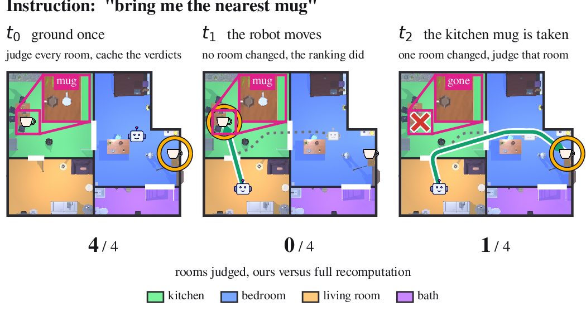
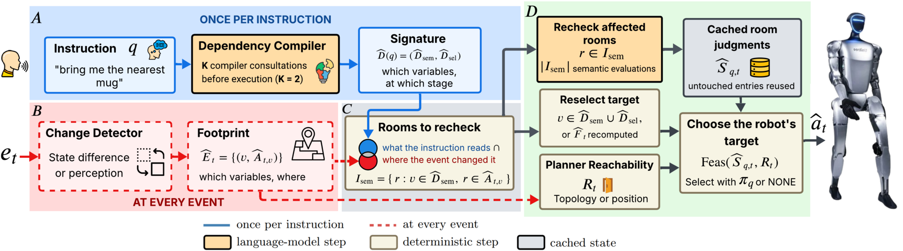
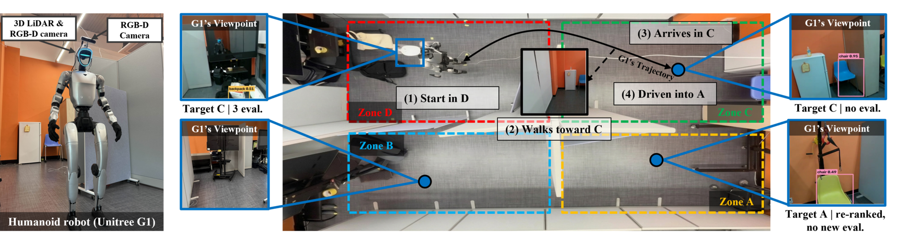

A robot carrying out one instruction while the world changes has to decide which of its cached room judgments still hold. Rechecking every room after every event is wasteful. Reusing every judgment sends the robot after a target that is gone.
MIND makes roughly a third as many language model calls as full recomputation and changes none of the 1,200 decisions it was tested on.


Three of the four scenarios run on one layout, 26 scored runs in total. Decision, navigation and perception are scored separately, so a detector miss is never counted as a decision error.

| Scenario | Request | What it tests | Evaluations, MIND vs full |
|---|---|---|---|
| 1 | something to sit on | a move invalidates nothing | 3 vs 9 |
| 2 | the nearest thing to sit on | a move re-ranks at no semantic cost | 3 vs 9 |
| 4 | barrier, then the chair removed | two variables, two footprints, abstention | 4 vs 15 to 18 |
One evaluation is one language model call asking whether a room satisfies the request.
| Setting | Decisions preserved | Full | MIND |
|---|---|---|---|
| 240 five-event ProcTHOR sequences | 1,200 of 1,200 | 30.6 | 11.2 |
| Frozen Phi-4 judge | 1,200 of 1,200 | 30.6 | 11.2 |
| Frozen Qwen3-14B judge | 1,200 of 1,200 | 30.6 | 11.2 |
| 32 closed-loop AI2-THOR episodes | 32 of 32 final targets | 26.00 | 10.47 |
Reuse on its own is not enough. A static inventory-only rule agrees with full recomputation on 0.958 and 0.983 of decisions under the two frozen judges, against 1.000 here.
Generators, prompts, frozen manifests, model configurations and the result logs behind every table: anonymous.4open.science/r/mind-icra27